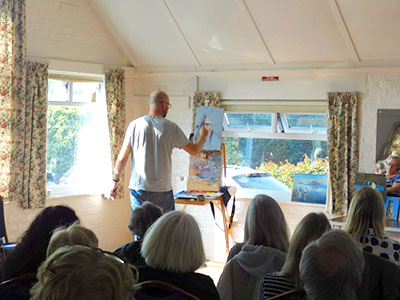
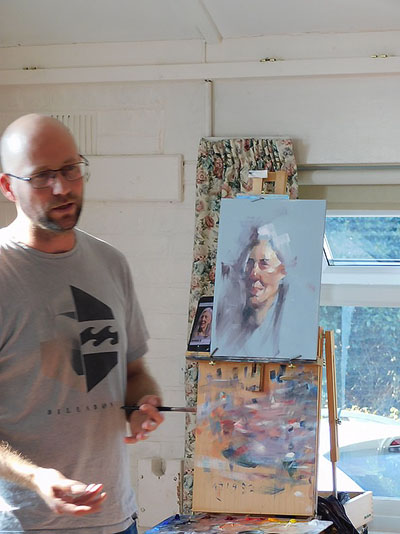
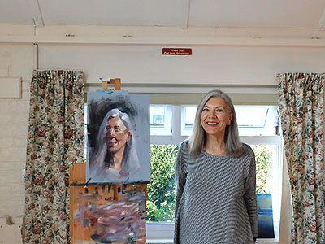

Contents:
- Winter Programme (September-April)
- Summer Programme (May-August)
- Demonstration Programme
- Our latest demonstration
- Our location
Winter Programme
Members meet every Wednesday in Ferring Village Hall, 9:30-11:30 A.M.
This year's Winter programme will appear here later in the year! See below for our Summer programme.
Summer Programme 2019
Members meet in different locations every week to sketch and paint outside.
Wednesday mornings 9:30 A.M.-12:00 Noon.
| Date | Venue | Painting Ideas | Meeting/Parking |
|---|---|---|---|
| May 1st | Nepcote Green Findon village | Village Green, Cottages Downland views | Parking off road adjacent to Nepcote green. Pub+rest. in Findon village |
| May 8th | Swanbourne Lake | Views, wildfowl, people | Parking Mill Rd. Arundel.Tearoom/toilet/th> |
| May 15th | Ham Manor Golfcourse | Views over golf course from terrace, refreshm. | A259, Mill Ln roundabout, N into Golfers Ln. BN16 4JE |
| May 22nd | Coombes Church Park near church | Tiny church, rectory cottages, views. £1 pp. | Coombes Road off A27 opp. Airport. Coombes farm entrance left, to church |
| May 29th | West Burton House Susan Middlemas Permission to stay on after lunch. | House & magnificent garden with Downland views, follies, topiary. Under cover if wet/windy | Turn off A29 into W. Burton La. KEEP STRAIGHT ON 0.8 miles, - ignore Bignore sign -, enter ‘No through road’, entrance is on left. Parking, toilet. |
| Jun 5th | Bailiffscourt Hotel and Spa BN17 5RW* | Hotel grounds, building, beach nearby | Turn left off A259 Climping Rd., at Hotel sign, into Climping Str. Till Hotel Sign. Parking, Refreshments, toilets |
| Jun 12th | Upper Broomhurst Farm. (Top of hill) | Views to Arundel, chickens, cottage | A27 to Arundel, entrance turn left opp. Beefeater Crossbush. Parking/toilets |
| Jun 19th | West Worthing Marine Gardens | Marine gardens Beach across road. | Park on road where you can. café/restaurant toilets BN11 5EF |
| Jun 26th | Parham Grounds RH20 4HR | Elizabethan Mansion, church, views to Downs. Grounds only | Turn into grounds in bend of A283 Pulborough Road, West of Storrington Free parking near mansion |
| Jul 3rd | Highdown Gardens OPENS at 10 | Chalkpit garden, trees, shrubs, flowers, ponds | Parking, toilet, tearoom/restaurant (Meeting, committee members pm.) |
| Jul 10th | Arun river from South side, by Lido | Views of castle, river, boats. (Sensible shoes) | Pay Cp. at Lido pool, alley to river on left of pool. Tearms/rests in Arundel |
| Jul 17th | Allotment Gardens Worthing | Sheds, pots, vegetables and flowers | On road parking, entrance at end of Ringmer Road, Worthing. Toilets. Arrive 9.30 PROMPTLY to be admitted |
| Jul 24th | Black Rabbit, Mill Road, Arundel | River views, reflections | Car park, refreshments/food, toilet |
| July 31st-August 6th | Annual Art Exhibition - Ferring Village Hall | ||
| Aug 7th | Arun Yacht Club Littlehampton | Club pontoons, sandy foreshore, river, boats | A259, West of river, Ferry rd., Rope Walk. Clubhouse, free parking, toilets |
| Aug 14th | Angmering Village Centre | Village centre, adjacent roads and church | Park near church/shops. Two excellent pubs in village. |
| Aug 21st | Mill Farm Fisheries RH20 1HF | Lakes, fishermen and women, views | A29 North of Bury, left B2138, directly left Bignor rd. Cp. 250 yards on left |
| Aug 28th | Lancing College | College and chapel facades, views | N. of A27 opposite airport. Parking in visitors cp. |
| Sep 4th | Back to Village Hall for Winter Programme | ||
Demonstration Meetings
Art demonstration meetings are held on the third Saturday of every month at
Ferring Village Hall, 2.30-4:30 p.m.,
and visitors are welcome at these (£4 per meeting).
Demonstration Programme 2019/20
| 2019 | 2019 cont'd | ||
|---|---|---|---|
| May 18th | Jo Louca "City Night Scene" (watercolour) | Sep 21st | Liz Seward "Still Life" (watercolour) |
| June 15th | Debbie Hinks
"Clothed figures" (pastel) (this demo will be held in St. Andrew's Church Hall) |
Oct 19th | David Henty "No intent to deceive" (oils) |
| TBC | Exhibition of members work in Ferring Village Hall | Nov 16th | Joel Wareing "Figures in sunlight in an urban setting" (pastel) |
| 2020 | |||
| Jan 18th | Roger Dellar "Interior scene with figures" (oils) | ||
| Feb 15th | Sera Knight "Dance" (acrylic and collage) | ||
| Mar 21st | Marcus Finch
"Landscape workshop" (acrylic) (this workshop will run from 11am to 5pm and will be held in St. Andrew's Church Hall) |
||
| Apr 18th | AGM |
Our latest demonstration
A portrait in oils by Tony Parsons
The demonstration was very well attended, boosted by 15 guests.
Tony is a local artist from Brighton. He paints every day and has previously worked as a caricature artist. He has a long association with the sea, and currently drives the Brighton life boat and lives on a boat.
Tony agreed to work from a photograph, taken on the day, of a brave volunteer, Elaine. He stressed that while he had no problem with working from a photograph, it would inevitably produce a different result than working from life.
He talked through his limited palette and stressed the importance of learning how each of the colours behave, especially when mixing. He believes that if you introduce a new colour, it takes at least 6 months of use before you fully understand it. Today he was painting on a canvas board and using ZestIt as the solvent. The board had been primed with gesso, coloured a light grey with paynes grey, and containing Polyfilla dust.
We were warned that there would be no pre-drawing. Chaos was the starting point and hopefully a likeness would appear. Without any predrawing, Tony applied areas of dark tone to the canvas. It was definitiely difficult to spot a likeness a this stage.

Tony then started to apply areas of highlight, again using a large brush. He constantly referred to the importance of tonal value. “Tone does the work, and colour gets the credit”. By the break for tea, a likeness was beginnng to emerge. This was likened to a nervous wild animal. “Take great care not to lose it, once it has been captured.”

After the break Tony switched to a smaller, softer brush. The ZestIt had evaporated from the earlier painting and it was possible to paint over it, although you only had a couple of brush strokes before the layers would blend producing mud. He repeatedly walked a long way back from the painting to review the progress, explaining that he did not want to get bogged down in the detail.
Managing to combine painting with a constant explanation of what he was doing, Tony worked all over the painting. Never focussing on one area the image began to emerge. Almost the final stage was to apply a dark green background, pushing the face forward. In common with all Tony’s work there was a real sense of light in the work. Elaine certainly seemed pleased - she bought the final picture.

Click here to see some of our previous demonstrations!
Location of Ferring Village Hall
Address: Ferring Street, Ferring, West Sussex, BN12 5JP
Map:
Click here to see this on Google Maps!